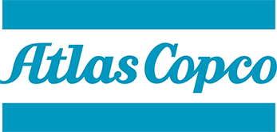
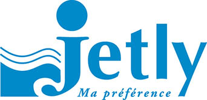

Revendeur de produits de qualité.
Gonzalez Bobinage est distributeur de plusieurs entités.
Distributeur BODIN
Spécialisé dans la conception et de la fabrication de Pompes pour l'Assainissement et l'Industrie agro-alimentaire.
Les pompes BODIN sont spécialisés dans la vente de petites pompes submersibles de relevage d'eaux usées destinées au marché de l'habitat.
Distributeur ATLAS COPCO France

Les produits Atlas Copco sont disponibles en France chez A Page Miclaud, distributeur spécialisé systèmes de distribution d'air comprimé, d'air respirable dans les milieux professionnels.
Les produits Atlas Copco commercialisés par A Page Miclaud sont essentiellement des compresseurs d'air comprimé mais aussi des filtres à air comprimé, des colonnes de charbon, des sécheurs d'air, des réservoirs à air comprimé, des épurateurs de condensats…
Pour toutes informations complémentaires sur les produits Atlas Copco, veuillez prendre contact avec
nous
Distributeur JETLY

Depuis 1977, Jetly, spécialiste de la pompe, distribue aux grossistes spécialisés l’ensemble des matériels nécessaires à toute installation domestique et petit collectif de pompage d’eau.